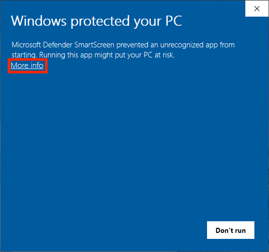
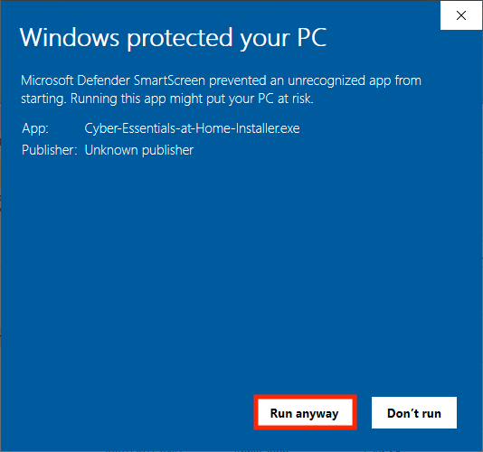
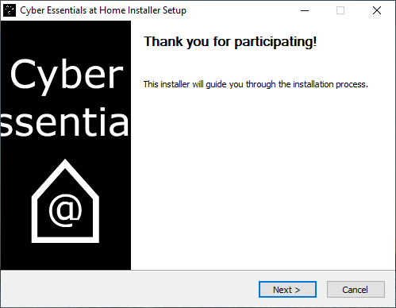
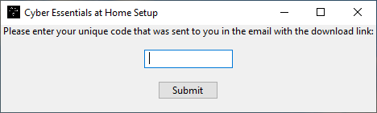

To install the tool on Windows, please follow the 4 simple instructions below:
DOWNLOAD FOR WINDOWS
This program may trigger your antivirus system with a file called "CYBER_ESSENTIALS_AT_HOME_TEST_DONT_WORRY". This is normal and nothing to worry about.
The following box may appear when you try to open the installer. If it does, click More info:

And then click Run anyway.


